Cover
ISSS608 Take-home Exercise 1 · Visual Analytics for Data DiscoveryYang Yang · 23 May 2026Contents
1. Data and KPI design
Policy-year unit, exposure adjustment, and profitability metrics.
2. Portfolio-level diagnostics
Growth, loss-ratio trend, zero claims, and loss-tail behaviour.
3. Segment-level visual discovery
Product, bonus score, payment frequency, policy status, and geography.
4. Advanced visual analytics
Heatmap, funnel plot, raincloud plot, and ridgeline comparison.
5. Statistical support
Non-parametric validation of segment differences.
6. Management implications
Where underwriting and pricing attention should go first.
Observation 1 — The dataset supports exposure-adjusted insurance analysis
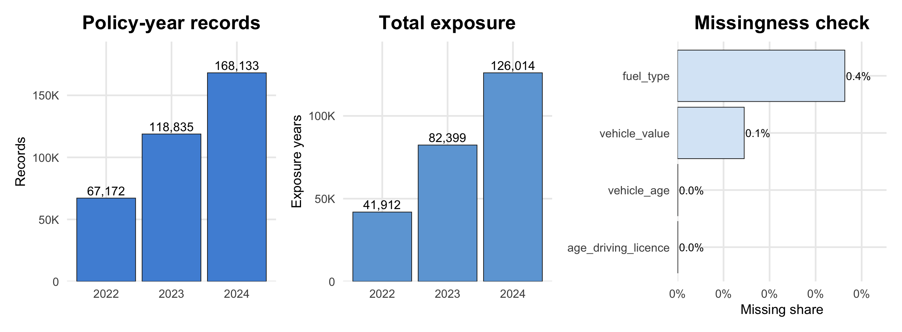
- Dataset contains 354,140 policy-year records and `r comma(round(overall$exposure, 0)) exposure years.
- The analytical unit is appropriate because premium, claims, incurred losses and exposure are all available.
- Implication: profitability must be analysed using exposure-adjusted and portfolio-weighted metrics, not raw averages.
Analytical Framework — Profitability and volatility are decomposed
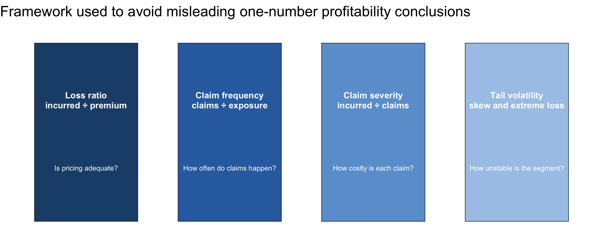
- Loss ratio is the primary profitability KPI.
- Frequency and severity explain why the loss ratio changes.
- Tail volatility identifies segments where averages are unstable because of extreme claims.
Observation 2 — Portfolio growth did not translate into stable profitability
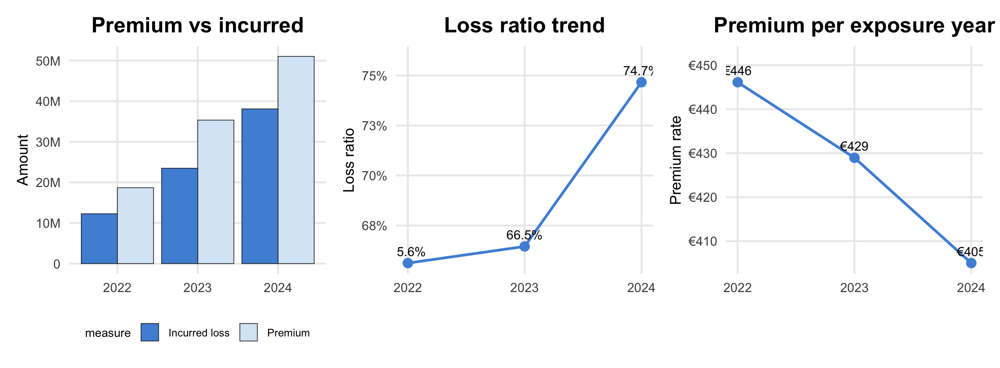
- Premium grew by 173.0%, while incurred losses grew by 210.6%.
- Portfolio loss ratio rose by 9.0 percentage points.
- Implication: growth requires segment-level pricing control; volume alone did not stabilise profitability.
Observation 3 — Claims are rare, but losses are tail-driven
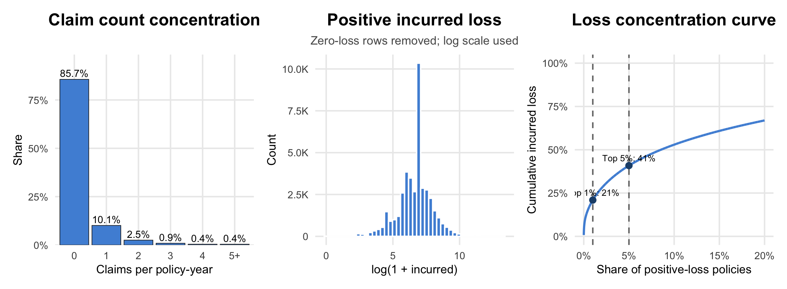
- 85.7% of policy-year records have zero claims.
- Among positive-loss policies, the top 1% contributes 20.9% of incurred loss.
- Implication: frequency and severity must be modelled separately; raw mean loss is unstable.
Insight 1 — Product type is the strongest first-level profitability separator
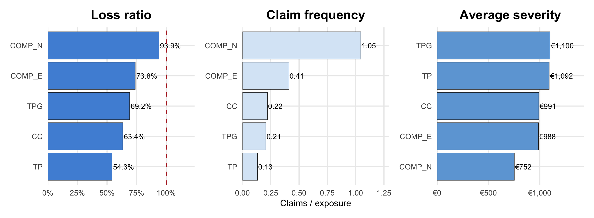
- Worst product: COMP_N, loss ratio 93.9%.
- Best product: TP, loss ratio 54.3%.
- Implication: product review should decompose loss ratio into claim frequency and severity before repricing.
Insight 2 — Bonus score carries risk information not fully neutralised by premium
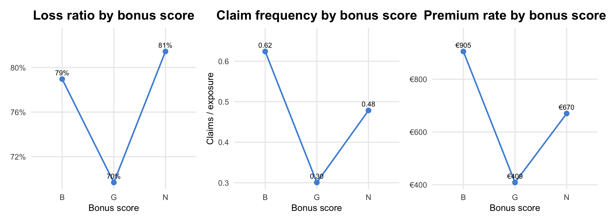
- Highest-loss bonus group: N, loss ratio 81.4%.
- Lowest-loss bonus group: G, loss ratio 69.7%.
- Implication: bonus score should remain in monitoring because premium adjustment does not fully flatten risk differences.
Insight 3 — Payment frequency reveals behavioural risk differences
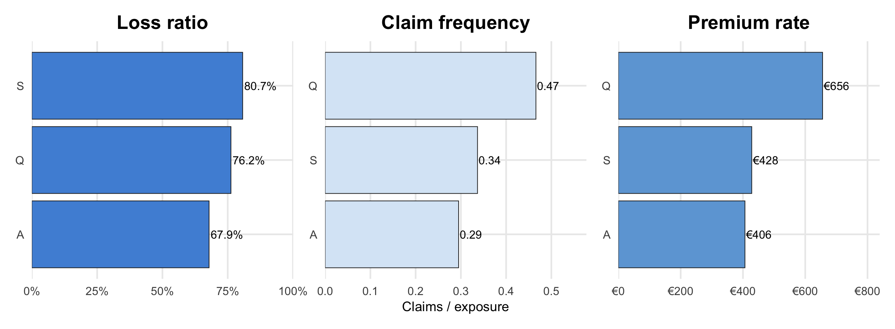
- Highest claim-frequency payment group: Q, 0.47 claims per exposure year.
- Worst loss-ratio payment group: S, loss ratio 80.7%.
- Implication: payment frequency is a behavioural risk signal, not only an administrative variable.
Insight 4 — Cancelled policies are materially adverse
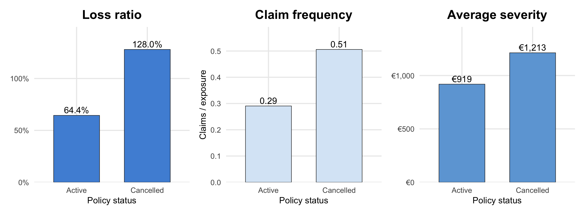
- Cancelled policies show loss ratio of 128.0%, versus 64.4% for active policies.
- Implication: cancellation is an adverse-experience monitoring signal, but should not be interpreted as causal without event sequencing.
Insight 5 — Geography and usage context create uneven profitability pockets
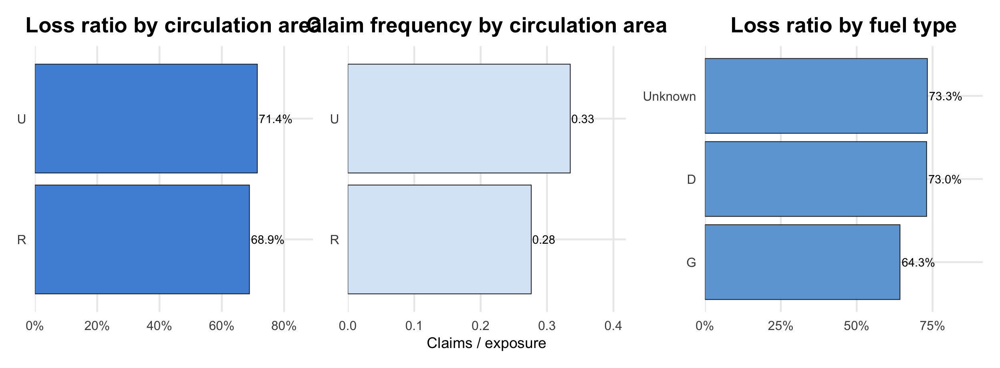
- Circulation area and fuel type show material differences in loss ratio and frequency.
- These variables are useful because they reflect contextual risk exposure, not only driver or product characteristics.
- Implication: rating review should check whether contextual variables are adequately priced.
Insight 6 — Driver age and vehicle age interact, not just act independently
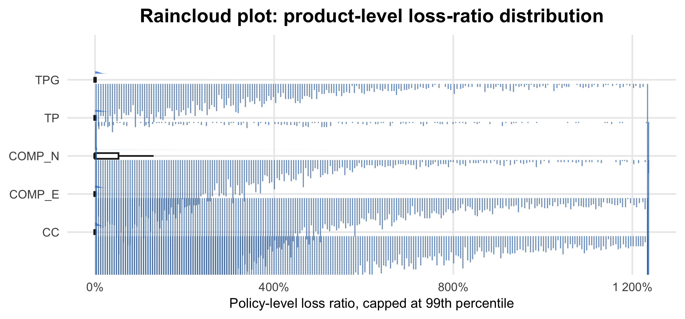
- Heatmap evidence shows that profitability varies by combination of driver age and vehicle age.
- The chart is used because the analytical question is interactional; a one-variable bar chart would hide joint risk pockets.
- Implication: interaction-based monitoring is more useful than checking one rating factor at a time.
Method Add-on 1 — Funnel plot avoids overreacting to small segments
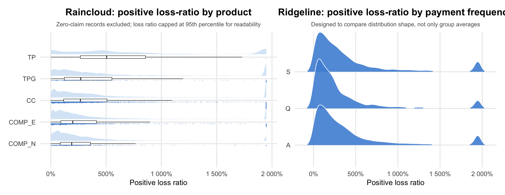
- Funnel plot is chosen because segment rankings can be misleading when exposure sizes differ.
- Points outside or near the funnel boundary deserve investigation before being treated as true high-risk brands.
- Implication: fair comparison requires volume adjustment, not just sorting by loss ratio.
Method Add-on 2 — Distribution shape confirms why simple averages are unstable
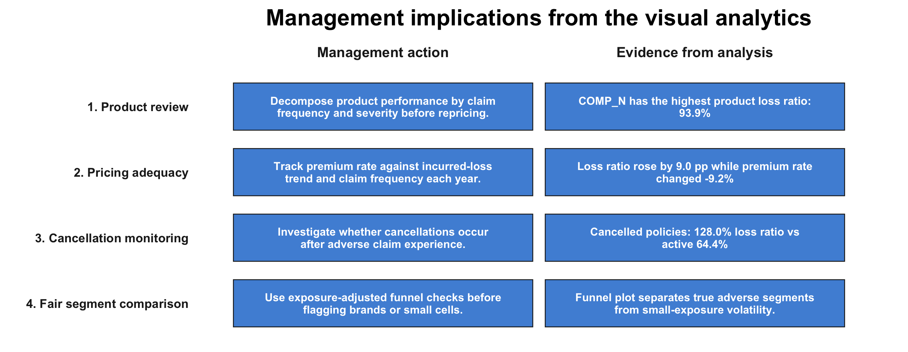
- The earlier zero-heavy chart explains claim occurrence; this slide isolates positive-loss policies to reveal severity and tail structure.
- Raincloud is used because it combines density, median/IQR, and observation concentration in one view.
- Ridgeline is used because payment frequency has multiple groups and the question is whether the whole distribution shape differs, not only the mean.
- Implication: advanced distribution plots are justified because profitability is skewed and tail-driven.
Statistical Validation — Visual differences are not only visual noise

- A non-parametric test is used because loss ratio is heavily skewed and zero-inflated.
- The test supports segment differences, but does not prove causality.
- Implication: the visuals are strong enough to guide deeper actuarial modelling, not replace it.
Final Recommendations

Overall conclusion: profitability pressure is not random. It is concentrated in identifiable product, payment, cancellation, and exposure-adjusted segment patterns. The next step is formal actuarial modelling, but the visual analytics already gives management a defensible shortlist for investigation.
ISSS608 Take-home Exercise 1